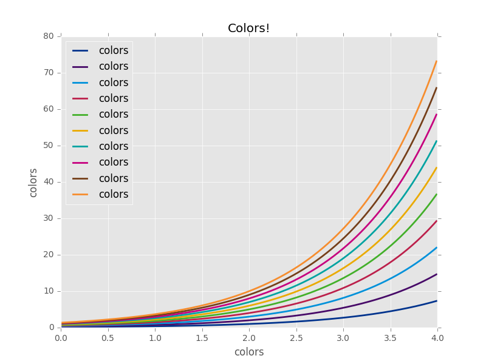

Custom color schemes in Matplotlib
At KPMG, like (I imagine) at most companies, we have a custom color palette that presentations and other materials are supposed to conform to. I actually quite like it when things I produce have a consistent look and feel, so I decided to find out how to make a custom color palette in matplotlib. Turns out that it's super easy.
The first step is to create a .mplstyle file for your color scheme. These can contain a bunch of options, but you can download a sample here. Way down in line 337 (at the time of writing), you will find the following lines:
#axes.prop_cycle : cycler('color', # ['1f77b4', 'ff7f0e', '2ca02c', 'd62728', # '9467bd', '8c564b', 'e377c2', '7f7f7f', # 'bcbd22', '17becf']) # color cycle for plot lines # as list of string colorspecs: # single letter, long name, or # web-style hex
This setting defines the cycle of colors that matplotlib uses for consecutive elements on plots when you don't specify the colors. Uncomment these lines and swap out the list for a list of your favorite (or corporately imposed) colors. As indicated by the comment, matplotlib will accept single letter, long name, or hex colors. Use the HTML long name colors to get all your favorites like Gamboge, GrayTeaGreen, and PapayaWhip.
Once you've got your color theme specified, you need to save the file in the stylelib directory of your matplotlib configdir. You can find your configdir using
>>> import matplotlib >>> matplotlib.get_configdir() 'C:\\Users\\johnpaton\\.matplotlib'
Save the file as <configdir>/stylelib/<my_style_name>.mplstyle. I called mine kpmg since that's what I'm using it for. The filename is how you refer to the style in your code. You can now use your brand new color scheme to make pretty plots in the same way as you use built in styles:
>>> import matplotlib.pyplot as plt >>> plt.style.use('kpmg')
Since all we've done is change the color scheme, you can also use it in combination with other styles and only change their colors. Just make sure your own style is the last one in the list:
>>> plt.style.use(['ggplot','kpmg'])
There are a bunch more settings that you can define in the matplotlib style file, but since I'm a terrible designer I know I'll make bad choices, so I'll leave that to the experts. For now, I'm just happy to see the exponential growth of colors in my life.
